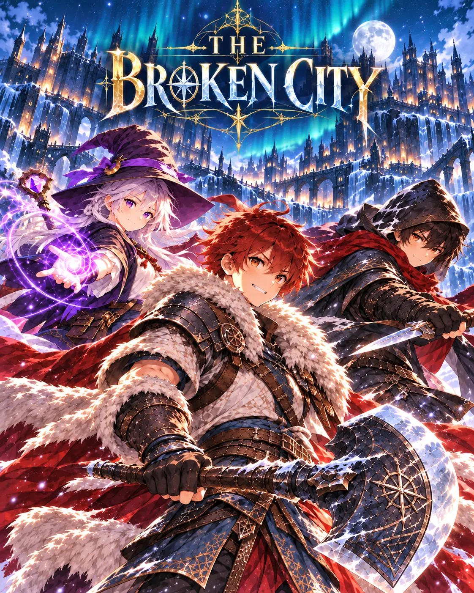
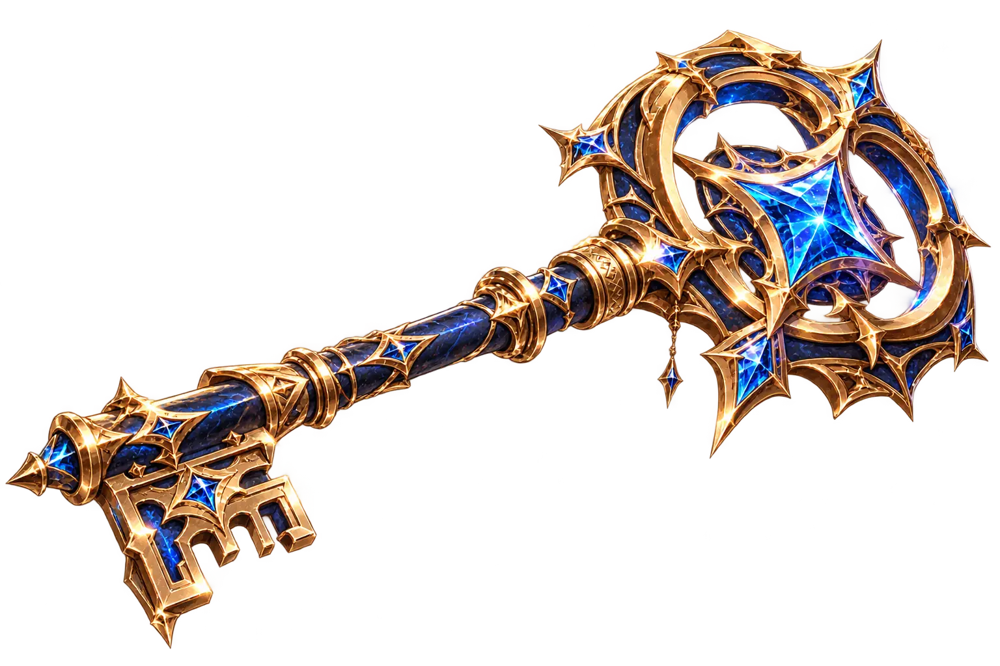

FREE RPG TOOL · NO ACCOUNT REQUIRED
Gacha Simulator & Pity Calculator
Calculate your chances of obtaining a rare pull and simulate summons with optional hard pity.


Chance of at least one success
—Choose your settings to see the odds.
Simulated outcomes are random and will differ from the exact probability.
HOW IT WORKS
Set an independent base success rate and a hard-pity threshold. The calculator reports the exact probability of at least one success over your next N pulls, assuming every pull has the stated independent base rate until a guaranteed success at hard pity; pity resets after success. The illustrative KardRune Event preset uses a 10% hero category chance and pity at 10, but is not connected to your game inventory.
FREQUENTLY ASKED QUESTIONS
What is hard pity?
Hard pity guarantees the selected success when the counter reaches its threshold. This tool resets that counter after a success.
Are these my real KardRune summon odds?
No. The website is a separate probability playground. Always consult the current in-game banner rules for real rewards and rates.